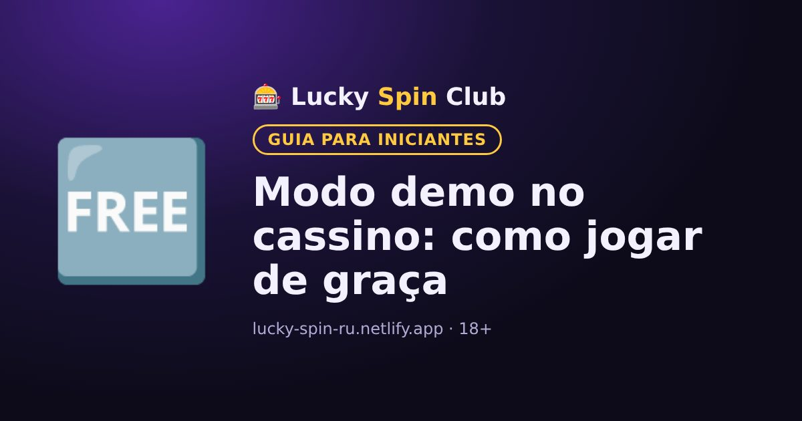

Modo demo no cassino: como jogar de graça

Atualizado: 6 de novembro de 2026
O modo demo permite jogar com créditos virtuais sem arriscar seu dinheiro. É a melhor forma de conhecer um jogo novo.
Como abrir o modo demo
Passe o cursor sobre o jogo ou abra o card dele: muitas vezes há um botão «Demo» ou «Jogar grátis». Em alguns cassinos o demo só fica disponível depois do cadastro.
Para que serve
- Entender as regras e os recursos de bônus do caça-níquel.
- Sentir a volatilidade: com que frequência saem os prêmios.
- Escolher um jogo de que você goste antes de jogar com dinheiro.
Qual a diferença para o jogo real
A matemática do jogo no demo costuma ser a mesma, mas os ganhos são virtuais e não podem ser sacados. Além disso, quando o dinheiro é seu, as decisões são tomadas de outro jeito: tenha isso em mente.
Onde não há demo
Nos jogos ao vivo com dealer e em alguns caça-níqueis com jackpot normalmente não existe modo demo.
Quer experimentar? O cadastro leva cerca de um minuto.
🎁 Cadastrar e pegar o bônusPerguntas frequentes
Dá para ganhar dinheiro no modo demo?
Não. O modo demo usa créditos virtuais e os ganhos não podem ser sacados.
O demo é diferente do jogo com dinheiro real?
As regras e a matemática costumam ser as mesmas, mas os ganhos são virtuais.
Precisa se cadastrar para usar o demo?
Depende do cassino: em alguns o demo está disponível sem cadastro e em outros só depois dele.